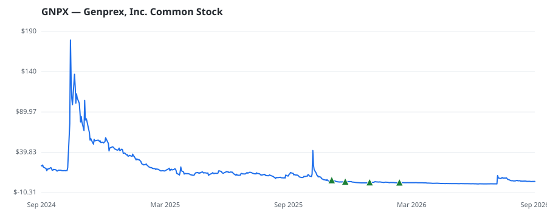

bullish · bearish · n/a — dots: price>SMA10 · SMA10>SMA50 · SMA50>SMA200 · up>down volume (20d)
Pharmaceuticals & Biotech · micro cap
Members who bought GNPX earned a dollar-weighted +17.2% from their disclosure dates, versus +11.8% for the S&P 500 over the same holding windows (+5.4% alpha).

▲ green = a disclosed purchase · ▼ red = a disclosed sale (plotted on disclosure date)
Genprex Inc is a clinical-stage gene therapy company focused on developing life-changing therapies for patients with cancer and diabetes. Its technologies are designed to administer disease-fighting genes to provide new therapies for large patient populations with cancer and diabetes who currently have limited treatment options. Genprex's oncology program utilizes its systemic, non-viral Oncoprex Delivery System, which encapsulates the gene-expressing plasmids using lipid-based nanoparticles in a lipoplex form. The company's product candidate, Reqorsa Gene Therapy (quaratusugene ozeplasmid), i PHARMACEUTICAL PREPARATIONS · website
| Revenue | $0 | Net income | $-16.2M |
|---|---|---|---|
| Operating income | $-15.5M | Diluted EPS | — |
| Assets | $10.2M | Equity | $8.0M |
| Member | Chamber | Out-performer | Disclosed buys $ | Return on buys |
|---|---|---|---|---|
| Tim Moore | house | yes | $57K | +17.2% |
Disclosed $ figures are bracket midpoints — filings report ranges (e.g. $1,001–$15,000), not exact amounts.